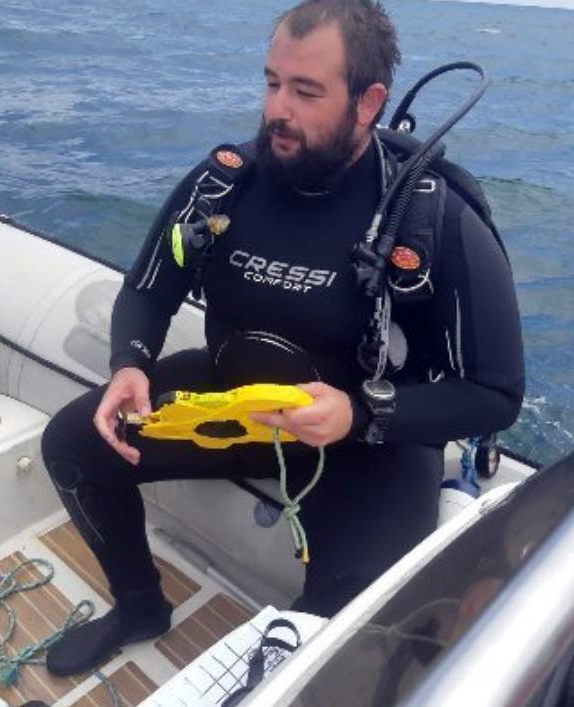
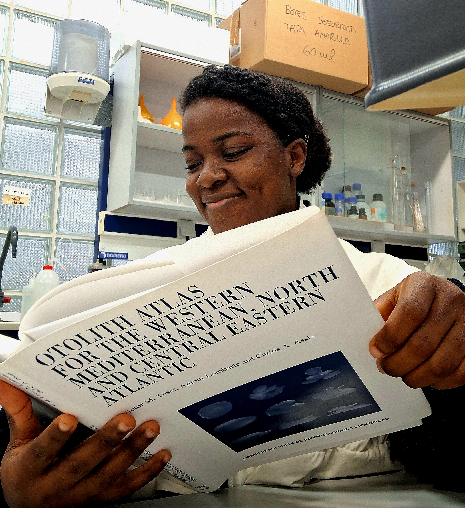
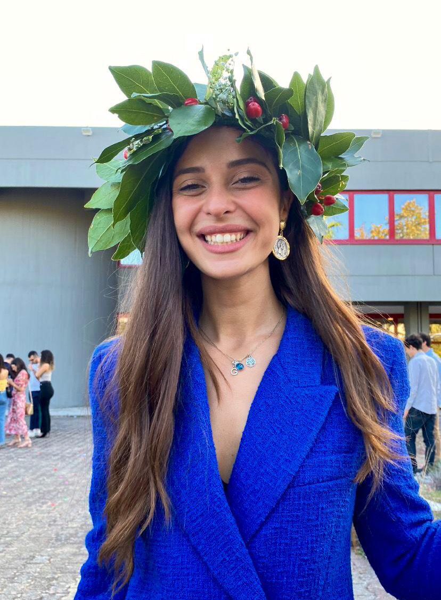
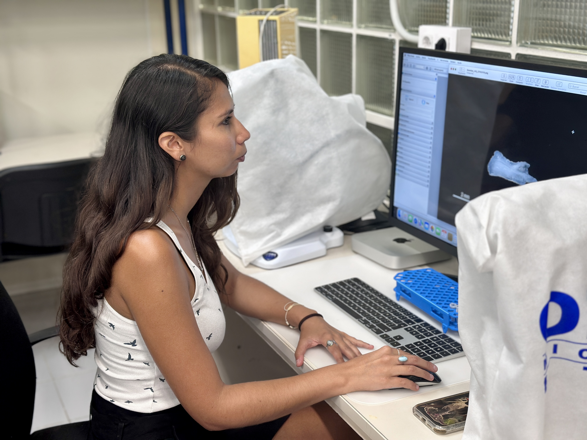
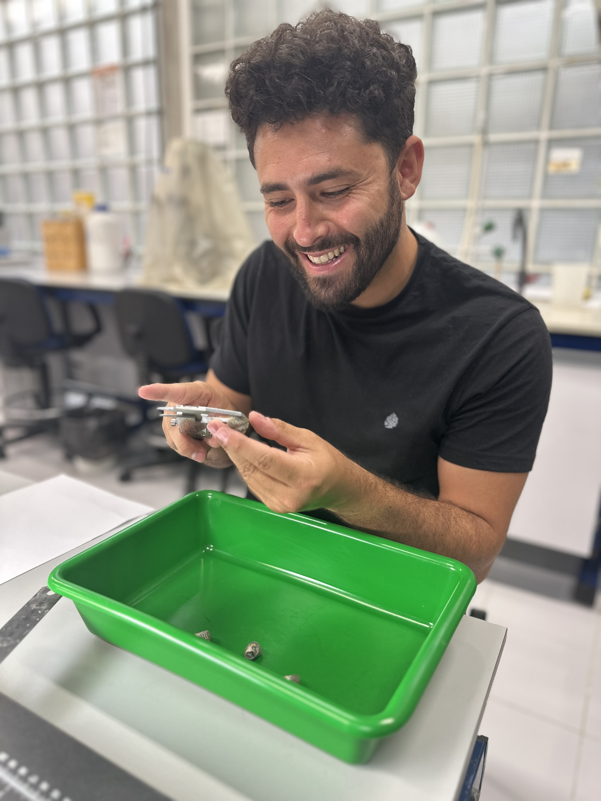
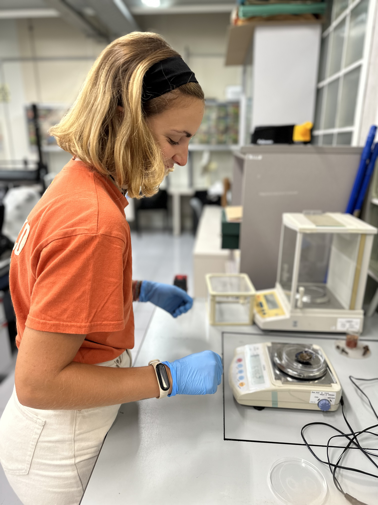

Student Supervision
Doctoral, Master's and undergraduate supervision, research training and international student mobility.
Ph.D. Theses
Doctoral research supervision in marine sciences, fisheries and ecological research.
Master's Theses
Master's research projects and advanced postgraduate supervision.
Final Degree Projects
Undergraduate dissertations in marine biology, ecology and fisheries science.
Erasmus & Grants
International student mobility and participation in funded research projects.
Research Training
Individual scientific training and supervised research experience.
Practices & Internships
External practices and summer research placements.
Ph.D. Theses
Alberto Rodríguez Díaz
Unlocking the Secrets of Population Structure in Overexploited Fish Stocks

Javier Martínez Pérez
Unraveling Individual Variability in Body and Otolith Shapes among Commercially Fish Species
Publications & conference outputs
Martinez-Pérez, J., Fueyo Rodríguez, A., Sánchez Fernández, O., Vasconcelos, J. 2026. Untangling the Aphanopus Species Complex: Implications for Fisheries Management. The 19th International Symposium on Oceanography of the Bay of Biscay (ISOBAY19).
Vasconcelos, J., Martínez-Pérez, J., Guerra-Marrero, A., Otero-Ferrer, J., Jurado-Ruzafa, A., Sousa, R., Hernández-González, C., Freitas, M., Tuset, V.M. 2025. Clarifying Species Identity in Aphanopus Using Wavelet-Based Otolith Shape Analysis. PLOS ONE 20(6): e0326199. DOI
Master's Theses

Esther Olufade
Tracing population structure in Dentex macrophthalmus through otolith shape across Atlantic and Mediterranean regions
Publications & scientific outputs
Vasconcelos, J., Olufade, E.O., Rodríguez Díaz, A., Jurado-Ruzafa, A., Hernández-González, C., Klaoudatos, D., Pajuelo, J.G. 2026. Otolith shape reveals regional phenotypic differentiation in Dentex macrophthalmus across the Atlantic and Mediterranean. Estuarine, Coastal and Shelf Science, 110187. DOI: 10.1016/j.ecss.2026.110187 ↗
Juan Carlos de la Rosa Valdivia
Deciphering Mollusk Body Shape Adaptations to Varying Hydrodynamic Conditions and Substrate Types
Publications & scientific outputs
Rosa-Valdivia, J.C., Riera, R., Martínez Ruiz, O., Vasconcelos, J. 2026. Deciphering Mollusc Body Shape Adaptations to Varying Hydrodynamic Conditions and Substrate Types. Hydrobiologia. DOI: 10.1007/s10750-026-06354-1.
Olivia Martínez Ruiz
Unravelling the Key Environmental Drivers in the Limpets of a Highly Anthropogenised Region
Publications & scientific outputs
Martínez Ruiz, O., Riera, R., Tuset, V.M., Vasconcelos, J. 2025. Coastal Exposure and Artificialization: Drivers of Shell Shape Variation in Intertidal Limpets. Estuarine, Coastal and Shelf Science. DOI: 10.1016/j.ecss.2025.109344
Final Degree Projects
Marina Shui Fernández Alba
Linking Thermal-Anomaly Variability and Phenotypic Structure in Trachurus trachurus: Insights from Otolith Contour Variability
Publications & scientific outputs
Martínez, J., Shui-Fernández, M., Rodríguez-Díaz, A., Rosano, F., Jurado-Ruzafa, A., Capillo, G., Vasconcelos, J. 2026. From juveniles to adults: wavelet analysis reveals regional otolith contour patterns in Trachurus trachurus. The 19th International Symposium on Oceanography of the Bay of Biscay (ISOBAY19). 16–18 June 2026, Donostia-San Sebastián (Gipuzkoa), Spain.
Rita Delia Santana Benítez
Intraspecific variability in otoliths of Helicolenus dactilopterus from the NE Atlantic and Mediterranean Sea
Publications & scientific outputs
Vasconcelos, J., Jurado-Ruzafa, A., Neves, A., Santana, R., Otero-Ferrer, J.L., Antoni Lombarte, Carlos Hernández-Rodríguez, Pablo Martín-Sosa, Ivan Ruiz-Pérez and V.M. Tuset. 2024. Phenotypic plasticity in the otolith contour of blackbelly rosefish (Helicolenus dactylopterus) in response to environmental factors. IX International Symposium on Marine Sciences. July 10–12, 2024, Valencia, Spain.
Vasconcelos, J., Jurado-Ruzafa, A., Neves, A., Santana-Benítez, R.D., et al. 2026. Unveiling regional population structure in blackbelly rosefish Helicolenus dactylopterus through otolith shape analysis. Marine Ecology Progress Series 777: meps15035. DOI: 10.3354/meps15035
María Cirera Díaz
Application of morphometry and shape analysis in the identification of coastal stocks
Publications & scientific outputs
Vasconcelos, J., Cirera, M., Vieira, A.R., Otero-Ferrer, J.L., Tuset, V.M. 2025. Application of shape analysis for the identification of pelagic fish stocks. Hydrobiologia 852, 2847–2869. DOI: 10.1007/s10750-025-05798-1

Pablo Jesús Angulo Falcón
Fecundity strategy in Patella aspera and Patella crenata from the Canary Islands (NE Atlantic)
Publications & scientific outputs
Vasconcelos, J., Angulo, P., Martínez-Ruiz, O., Díaz, A.R., Tuset, V.M., Riera, R. 2025. Adaptive Reproductive Strategies of Limpets in a Harvest-Influenced Environment. Fisheries Oceanography, e12745. DOI: 10.1111/fog.12745
João Paulo Silva Ferro
Fecundity Regulation Strategy of the Limpet, Patella ordinaria, of Madeira Island (NE Atlantic)
Publications & scientific outputs
Vasconcelos, J., Sousa, R., Ferro, João, Pinto, A.R., Freitas, M., Riera, R. 2023. Fecundity, an overlooked life-history trait for coastal management of commercial molluscs? Frontiers in Marine Science 10, 1173629. DOI: 10.3389/fmars.2023.1173629
Vasconcelos, J., Ferro, João, Sousa, R., Pinto, A.R., Riera, R. 2023. Fecundity strategy of the highly exploited limpet Patella ordinaria from an oceanic archipelago. Regional Studies in Marine Science 60, 102849. DOI: 10.1016/j.rsma.2023.102849
Ferro, João, Sousa, R., Riera, R., Freitas, M., Vasconcelos, J. 2022. Fecundity strategy of the highly exploited limpet Patella ordinaria from an oceanic archipelago. International Symposium on Artisanal and Recreational Fishing in Islands Systems: Assessment, Vulnerabilities and Management (IS-AR-FIS), Las Palmas de Gran Canaria, 6–8 July 2022.
Erasmus & Research Grants
Erasmus Students
Esther Olufade
Tracing population structure in Dentex macrophthalmus through otolith shape across Atlantic and Mediterranean regions
Publications & scientific outputs
Vasconcelos, J., Olufade, E.O., Rodríguez Díaz, A., Jurado-Ruzafa, A., Hernández-González, C., Klaoudatos, D., Pajuelo, J.G. 2026. Otolith shape reveals regional phenotypic differentiation in Dentex macrophthalmus across the Atlantic and Mediterranean. Estuarine, Coastal and Shelf Science, 110187.. DOI: 10.1016/j.ecss.2026.110187 ↗

Fabiana Rosano
Exploring the eco-morphology of Trachurus sp. otoliths
Publications & scientific outputs
Martínez, J., Shui-Fernández, M., Rodríguez-Díaz, A., Rosano, F., Jurado-Ruzafa, A., Capillo, G., Vasconcelos, J. 2026. From juveniles to adults: wavelet analysis reveals regional otolith contour patterns in Trachurus trachurus. The 19th International Symposium on Oceanography of the Bay of Biscay (ISOBAY19). 16–18 June 2026, Donostia-San Sebastián (Gipuzkoa), Spain.
Rosano, F., Albano, M., Capillo, G., D’Iglio, C., Famulari, S., Savoca, S., Spanò, N., Tuset, V.M., Vasconcelos, J. 2025. Otolith variability, age composition, and ontogenetic diet shift in Trachurus trachurus, Linnaeus, 1758, from the Southern Tyrrhenian Sea. Congresso AAI/UZI 2025. 16–19 September 2025, Cagliari, Sardinia, Italy.
Research Project Grants
Eros Fernando Geppi
Metacommunity dynamics of complex life cycle species in exploited ecosystems (EXPL/MAT-APL/0262/2021, LAPACOM)
João Paulo Silva Ferro
Metacommunity dynamics of complex life cycle species in exploited ecosystems (EXPL/MAT-APL/0262/2021, LAPACOM)
Research Training
Virginia Parisi
Assessing Morphological Responses to Environmental Change in Reef Fishes Using Geometric Morphometric Approaches

Lyanne Pierina Ampuero Merino
Morphotype Diversity in a Small Pelagic Fish Species Across a Temporal Dataset of 30 Years
Practices & Internships
External Practices
Marina Shui Fernández Alba

Juan Carlos de la Rosa Valdivia

Olivia Martínez Ruiz
María Cirera Díaz
Pablo Jesús Angulo Falcón
Lia Gran Lajas
Rita Delia Santana Benítez
Summer Internships
José Mateus Sousa Bento
Quantification of phenotypic variability in the otolith contour of mackerel, Scomber colias, in Madeira Island (NE Atlantic)
Ricardo Rúben de Araújo Mota
Fecundity regulation strategy in limpets of the species Patella aspera from Madeira Island (NE Atlantic)